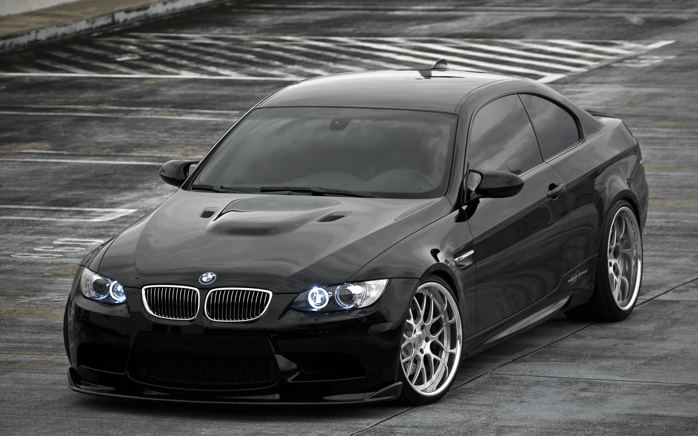
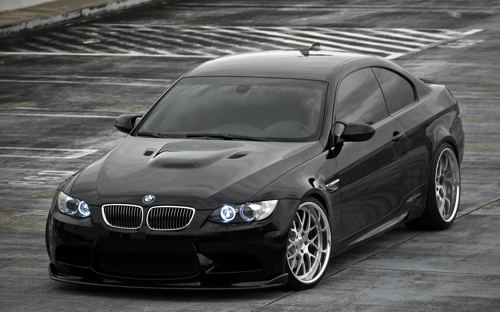

Баварские моторные заводы, известные сегодня в виде аббревиатуры БМВ, были открыты в 1916 году с целью изготовления авиационных двигателей. Память об этом хранится благодаря эмблеме марки, на которой схематично изображен пропеллер в цветах баварского флага. В 1929 году начался выпуск первых автомобилей BMW, отличающихся яркой внешностью и спортивным характером. Отличная динамика и абсолютная управляемость позволили бренду BMW стать лидером в сегменте автомобилей класса «люкс». Сегодня успешный автоконцерн владеет также всемирно известными марками Rolls-Royce и Bentley, компанией по производству уникальных спорткаров Lamborghini, а также компанией по производству малолитражных автомобилей MINI.